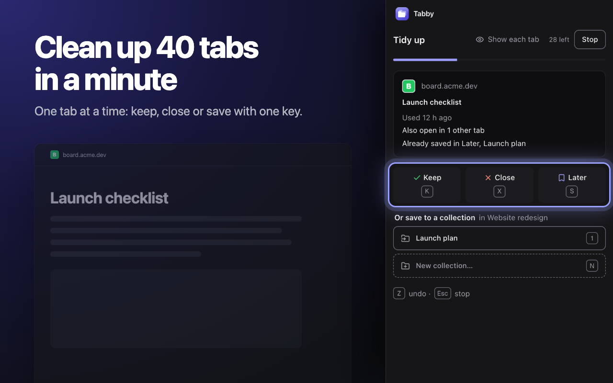
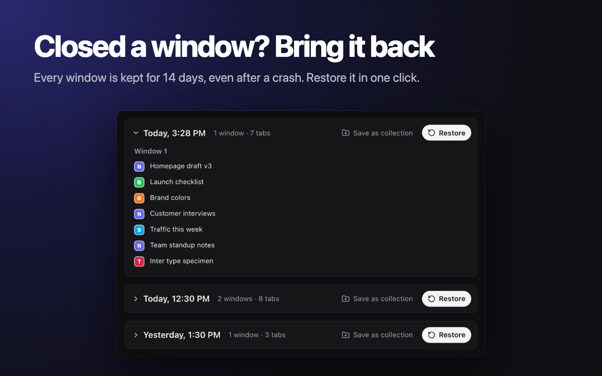
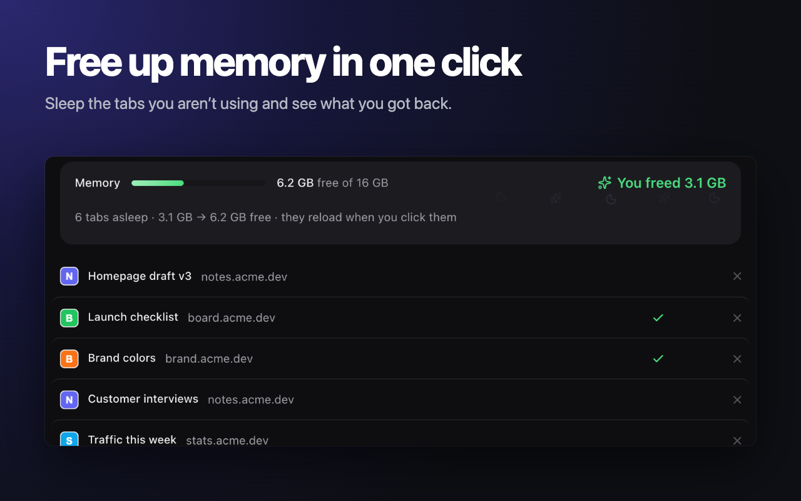
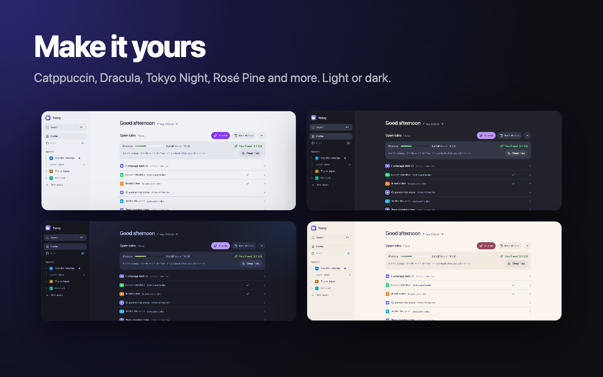
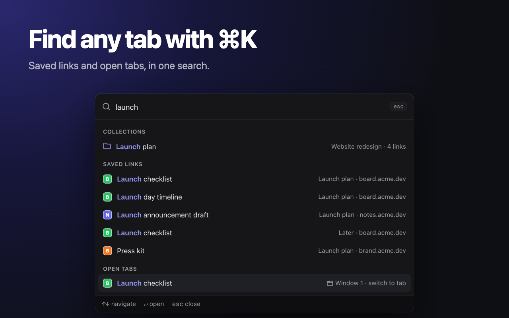
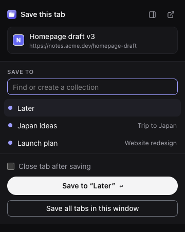

Save, then close
Save any tab to Later or a collection and close it. A ✓ shows what's already saved.
Tidy up in a minute
One tab at a time: keep, close or save with one key. Undo anything.
Bring it back
Closed a window by mistake, or the browser crashed? Every window is kept for 14 days.
Free up memory
Sleep the tabs you aren't using and see how much memory came back.
Find anything with ⌘K
Search open tabs, saved links and collections in one place.
Make it yours
Catppuccin, Dracula, Tokyo Night, Rosé Pine and more, light or dark.
No account, no limits
Save as many links as you like. Everything stays on your device.
Coming from Toby or OneTab?
Import your export file — or browser bookmarks — in seconds, right from the welcome screen.






What people say
5.0 on the Chrome Web Store
“With Chrome tab groups I had to keep every tab open, and it made my laptop slow. Close them and I’d have to group them all again, and they crowd the top bar. Tabby keeps them out of the way and shows up every time I open a new tab, so it’s one click. The vertical layout is easier on my eyes too.”
Tiny
“My tabs finally have a home 🏡 Calm, fast, private, and so easy to use. Tabby is a tiny joy in my day.”
T Nhan Tran · Chrome Web Store
“It’s easy for everyone to sort and close tabs at the end of the day 🎉”
@th-phnn
“Good and lightweight extension.”
Trung Bùi · Chrome Web Store

Save the tab you’re on
Press Alt+Shift+S or click the toolbar icon, pick a collection (or type a new one) and press Enter. Tabby remembers where you saved it last.
Pricing
Free for everything you need every day. Pro for people who run many projects at once.
Free
$0 forever
- Unlimited saved tabs, collections and spaces
- Tidy up: keep, close or save with one key
- Bring back closed windows and tabs (14 days), Trash
- Sleep tabs and see the memory you got back
- ⌘K search, favorites, duplicate cleanup
- Themes: Graphite, Catppuccin, Dracula
- Import from Toby, OneTab and bookmarks
- No account; everything stays on your device
Pro
$4 / month
or $29 / year
- Everything in Free
- Five more themes: Tokyo Night, Rosé Pine, Gruvbox, Aurora, Linen
- Tidy up straight into collections (1–9)
- Switch windows between unlimited spaces (free: 5)
- 14-day free trial, no card needed
Founding member
$49 once
- Pro for life, including future Pro features
- Launch offer: first 100 buyers only
Prices in USD; sales tax or VAT may be added at checkout. Payments are processed by our reseller Creem (creem.io), the Merchant of Record. 30-day money-back guarantee, see the refund policy.
Install
Free to install. Works in Chrome, Edge, Brave, Arc and Firefox 140+.